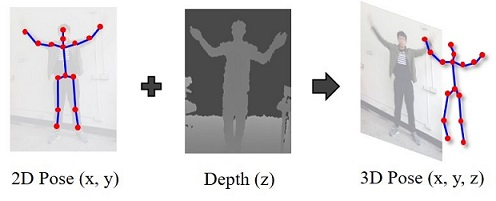
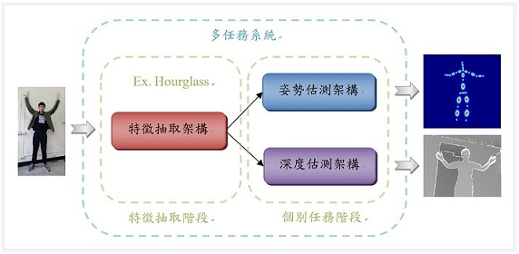

Introduction
Kinect先天具有使用環境、硬體介面、生產成本及攜帶性等硬體侷限問題。
研究運用Machine-Train-Machine概念，取得Kinect的原始資料進行訓練，試圖取代Kinect的人物姿勢與深度資訊辨識功能。
研究使用Multi-task Learning技術建置深度學習模型，由彩色影像同時估算人物姿勢與深度資訊。

藉由多任務學習架構，多項不同任務的前段特徵抽取架構設計適合共用。
參考近年有效模型架構設計，可以建立一個可以同時用來偵測人物姿勢與深度影像的系統。

Resource
針對人物姿勢估測以及深度圖預測兩項任務，網路可以取得不錯的開放資料集，包含MPII與NYU Depth等資料集。
MPII資料集提供豐富的人類活動影像 (RGB Image)與對應的人物關節註釋 (Annotation)。
NYU Depth資料集收集有彩色影像 (RGB Image)與深度資訊 (Depth Information)。
研究除了使用開源資料之外，也自行收集Kinect v2的原始感測資料，包含彩色影像、深度影像與人體關節註釋等資料。
資料集資源 (Dataset Resource)
| 資料集 |
內容 |
關節數 |
景深距離 |
樣本數 |
原始來源 (Open Data) |
檔案格式 |
備份源 |
| MPII Dataset |
1. Color Image
2. Joint Annotation
|
16 joints |
- |
28883 |
RGB Image & Annotation
Validation
|
MAT |
NOL Backup
|
| NYU-Depth Dataset |
1. Color Image
2. Depth Map
|
- |
0.8 ~ 4.0 m |
3733
(v1: 2284, v2: 1449) |
NYU V1
NYU V2
|
MAT |
NOL Backup
|
| NCTU Fitness Dataset |
1. Color Image
2. Joint Annotation
3. Depth Map
4. Binocular Color Image
5. IMU Data
6. Mobile Video
|
25 joints |
0.5 ~ 4.5 m |
47131 |
Fitness
|
CSV |
NOL Backup
|
| NOL Kinect Dataset |
1. Color Image
2. Joint Annotation
3. Depth Map
|
25 joints |
0.5 ~ 4.5 m |
??? |
-
|
CSV |
NOL Backup
|
Code: here.
Paper: here.
Docker: imprld01/kinet:v1.
Contact
Please send any questions or comments to Bo-Wun at sbw2319(at)gmail(dot)com.
|